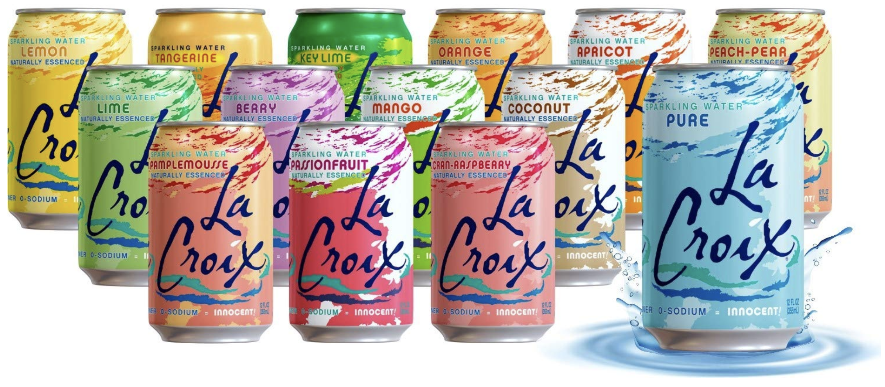
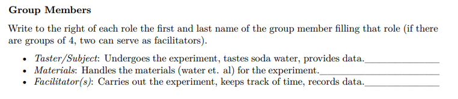
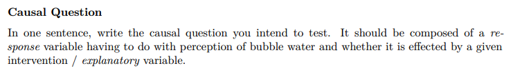
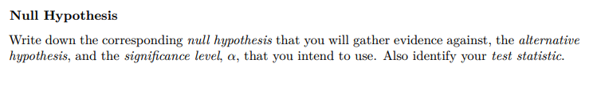
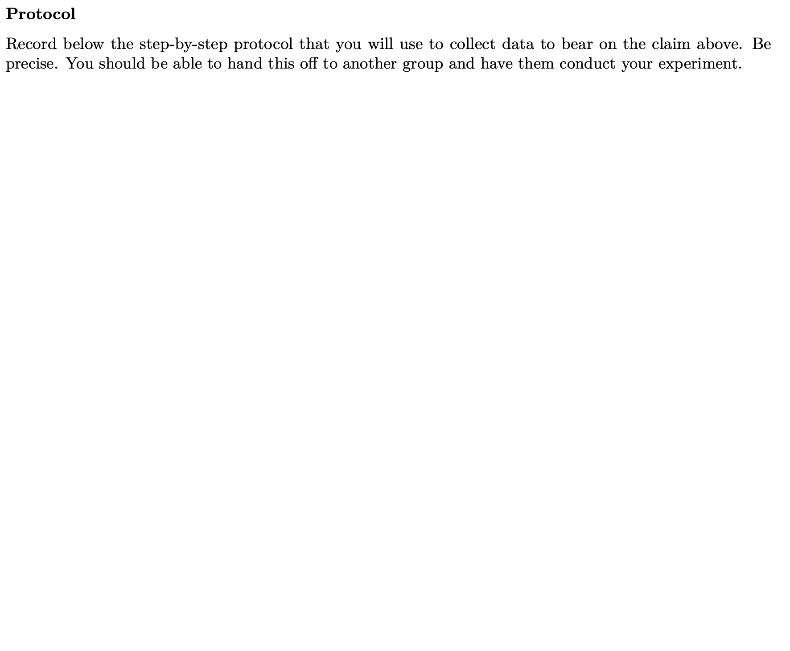
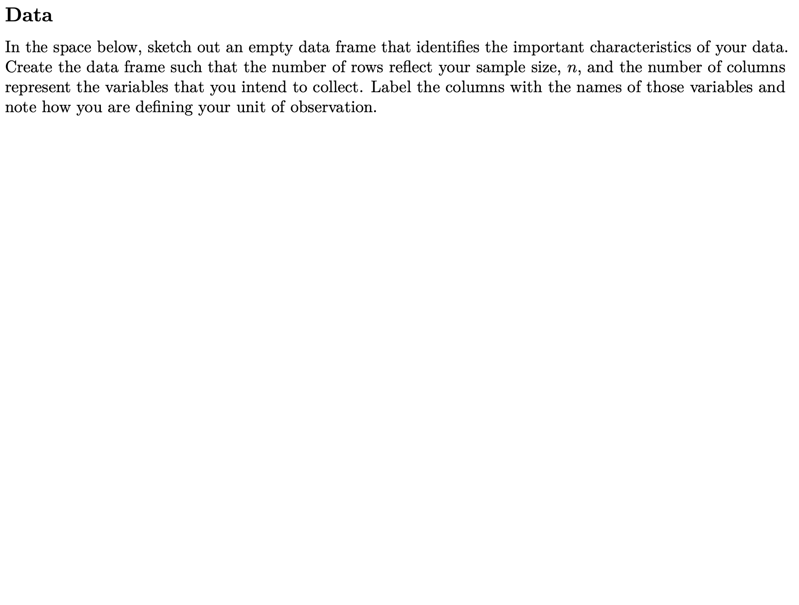

02:00
Defining Causality
STAT 20: Introduction to Probability and Statistics
Agenda
- Announcements
- Conceopt Questions: Defining Causality
- Lecture on Causality
- Break
- Worksheet: Defining Causality
- Appendix
Announcements
- Quiz 3 tomorrow (covers last Mon. through TODAY)
- Portfolio 6 (Mon., Tue., Wed.) due Friday at 11:59pm.
For today’s worksheet: your final group size should be no greater than 4. If you know a friend is not here today that will be here on Monday, account for that when making your groups.
Today on the WS we will design an experiment, on Monday we will perform that experiment
Concept Questions
We have observed that both A and B and have happened. What does it mean for A to be the cause of B, using the conditional counterfactual definition?
- A: If B happens, then A happens.
- B: If B hadn’t happened, then A would not have happened.
- C: If A hadn’t happened, then B would not have happened.
- D: If A happens, then B happens.
00:40
Read these instructions.
For the following two causal claims, identify the corresponding counterfactual event that, if we could observe it, would verify that indeed there was a causal effect.
00:30
The student did well on the quiz because they attended class.
- A: The student did attend class and did poorly on the quiz
- B: The student did not attend class and did poorly on the quiz
- C: The student did not attend class and did poorly on the quiz
- D: The student did attend class and did not do poorly on the quiz
00:30
The rat developed a tumor because it was exposed to tobacco tar.
- A: The rat developed a tumor after being exposed to tobacco tar.
- B: The rat did not develop a tumor after not being exposed to tobacco tar.
- C: The rat did not develop a tumor after being exposed to tobacco tar.
- D: The rat developed a tumor after not being exposed to tobacco tar.
00:30
Two of the three sentences describe claims about group-level average treatment effects. Identify the sentence describing a claim about an individual-level average treatment effect.
- A: Stretching before going for a run lowers one’s risk of muscle injury.
- B: A government shutdown this fall will cause the United States’ 2025 GDP to decrease below its 2024 level.
- C: Sending four-year-olds to preschool generally increases their likelihood of graduating from high school by age 19.
- D: None of these claims describe individual-level average treatment effects.
00:45
Break
05:00
Worksheet: Defining Causality
A Matter of Taste
Your challenge: Determine whether you can affect one your teammates’ perceptions of bubble water by manipulating their experience of tasting.

Each team will have access to
- 50 minutes (half of next class)
- 2 cans of soda water, each one from a different flavor
- small paper cups
- saltine crackers
- other materials welcome
Group Members

Question and Hypotheses

Hypotheses

Protocol

Data

Appendix
Suppose that a prisoner is about to be executed by a firing squad. A certain chain of events must occur for this to happen. First, the judge orders the execution. The order goes to a captain, who signals the two soldiers of the firing squad (soldier 1 and soldier 2) to fire. They are obedient and expert marksmen, so they only fire on command, and if either one of them shoots, the prisoner dies.
Using the conditional counterfactual definition, who caused the death of the prisoner?
A. The judge
B. The captain
C. Soldier 1
D. Soldier 2
All of the four people in the table below need to travel from Berkeley to San Francisco today, and are trying to decide whether to take BART or to drive. The table below shows travel times for each individual (assume these are the true, known numbers, not just predictions).
| Name | Travel time by car (min) | Travel time by BART (min) |
|---|---|---|
| Maria | 35 | 28 |
| Fan | 30 | 32 |
| Alice | 40 | 55 |
| Muhammad | 30 | 40 |
Pick the correct way to fill in the following sentence: “Taking BART instead of driving will cause ___ to arrive more than ___ minutes later.”
01:00
All of the four people in the table below need to travel from Berkeley to San Francisco today, and are trying to decide whether to take BART or to drive. The table below shows travel times for each individual (assume these are the true, known numbers, not just predictions).
| Name | Travel time by car (min) | Travel time by BART (min) |
|---|---|---|
| Maria | 35 | 28 |
| Fan | 30 | 32 |
| Alice | 40 | 55 |
| Muhammad | 30 | 40 |
What is the average treatment effect of taking BART on travel time for these four subjects?
01:00
All of the four people in the table below need to travel from Berkeley to San Francisco today. The table below shows the actual travel times for each individual using the method they chose to use.
| Name | Travel time by car (min) | Travel time by BART (min) |
|---|---|---|
| Maria | ? | 28 |
| Fan | ? | 32 |
| Alice | 40 | ? |
| Muhammad | 30 | ? |
What is a natural estimate of the average effect of taking BART (rather than driving) if we only observed this data?
01:00
All of the four people in the table below need to travel from Berkeley to San Francisco today. The table below shows the actual travel times for each individual using the method they chose to use.
| Name | Travel time by car (min) | Travel time by BART (min) |
|---|---|---|
| Maria | ? | 28 |
| Fan | ? | 32 |
| Alice | 40 | ? |
| Muhammad | 30 | ? |
What are two different reasons why this estimate of the average treatment effect might not be very reliable?
03:00